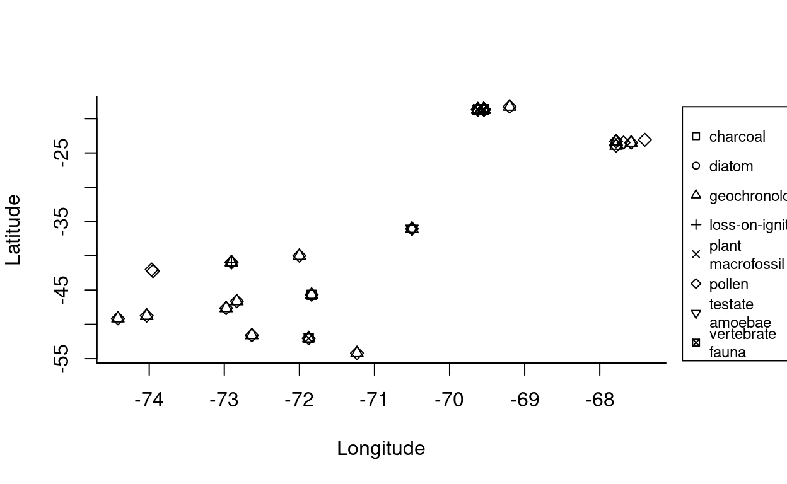

Un repaso sobre la situación actual de las bases de datos del proyecto AbrocomaDB
This workshop is intended to introduce individuals to different ways of analysing data stored in the Neotoma Paleoecology Database and the neotoma package for R.
Neotoma is a multiproxy paleo-database that stores a range of paleoecological & paleoenvironmental data. One of the strengths of Neotoma is the ability to compare different paleo-proxy data such as fossil pollen, diatoms, ostracodes, insects, charcoal, and geochemical data. In addition, the database is structured to allow the creation and storage of age models built on absolute dates derived from age control points and stratigraphic sections. Neotoma is a public-access, community-supported database that has emerged as the standard repository for Pliocene and Quaternary paleoecological data.
More teaching materials can be found in Neotoma’s educational resources.
This workshop is available on GitHub, in the NeotomaDB repository.
Show/Hide Search Results
Rename searches
Find a known site
Explore sites by geography
Using the Search dialog window, first choose “dataset type = Pollen” at the top
Then, in the Space subtab, click “Search by extent”
Find all sites within a database Chile and the region has a rich history in paleoecological reseach of fossil pollen data. Let’s see how many are currently in Neotoma:
Search for a single taxon.
Search for multiple taxa
Find all sites with Chenopodioideae pollen between 10,000 and 500 years ago.
Find all sites with Nothofagus between 10,000 and 500 years
You can combine these two searches to find sites with either Casuarina OR Nothfagus, or restrict it to only those sites with both taxa.
GET statements: values appended to a URL after a ? that are processed as parameters to be passed to the code running on the server. For example, we can think of http://google.com/?q=bananas as if it were an R function called search(), passed as search(q="bananas").Google has APIs for most of its products. You could write an R (or Python, etc.) script that would connect to the Google Calendar API to allow you to automatically change events on your calendar or report agenda items back to you in your own custom environment. Hilary Parker has a nice example for adding sunsets to Google Calendar using R.
APIs exist for many important biological and paleobiological databases. We will work through a quick example from Neotoma. Different databases/services produce different kinds of API returns. The simplest kinds are comma delimited text files, but many APIs are now returning JSON documents.
At its most basic level, JSON transmits data objects in attribute-value pairs. It has come to replace XML, which was the previous standard for this sort of data transmission.
JSON is composed of objects, enclosed by curly brackets, which may have any number of attributes named in quotes, with values after a colon, separated by commas. You may also present an array, or an ordered collection of values, enclosed in square brackets.
Let’s search the Neotoma DB via the API for Casuarina. Here is the example API call:
http://api.neotomadb.org/v1/data/sampledata?taxonname=Casuarina*
Notice when you make this call that the JSON is computer-friendly but not human-friendly (though this depends on browser). Try it again with the ‘pretty’ format tag:
http://api.neotomadb.org/v1/data/sampledata?taxonname=Casuarina*&format=pretty
You should be able to see the nested set of JSON objects, including the occurrences returned as comma-separated objects within "data".
Try experimenting with the search, substituting different names.
JSON is becoming the standard for data transfer in web services. R has several packages for dealing with JSON-formatted data. We will use some examples from the package RJSONIO. We will also use the package RCurl, which has functions to let you query APIs from within the R environment. The neotoma package is built around the newer httr package.
Based on the Casuarina example, you can see that the example API call is reporting data from only part of the distributed database schema of Neotoma. In fact, the Neotoma API is designed around a set of different URLs, each of which allows a user to search a portion of the database. So, if you want the full Site information for locations with Casuarina present, you would have to search on Casuarina in the SampleData URI (as we did in the example), pull the DatasetID values from those returns, then search on the Dataset URI (http://api.neotomadb.org/v1/data/datasets) for those DatasetIDs, which would, in turn, produce the SiteIDs, which you would then search on the Sites URI (http://api.neotomadb.org/v1/data/sites). This sort of searching would be cumbersome if you were to do it by hand, but fortunately you can script a computer to do it for you. In fact, you don’t have to write the scripts to do it, because they have already been constructed and provided to the community as the R neotoma package.
The neotoma package will the the subject of our next module, but bear in mind that the other APIs also have wrapper packages to simplify data calls in R. The PaleoBioDB has a package, paleobioDB, and iDigBio has a package, ridigbio. The Earth-Life Consortium was aimed at creating a single API and wrapping R package to access both PaleoBioDB and Neotoma at the same time, as well as linking to many online museum databases and iDigBio. We wanted to introduce you to the underlying architecture here so you would understand what these packages are doing, and would know that you can crack them open and hack your own solutions if you cannot get them to give you the data or format of data that you need for your work.
neotoma PackageInstall the neotoma package, then add it to your programming environment
neotoma has three core commands: get_site, get_dataset, and get_download. The first two return metadata for sites and datasets; the latter returns data. See Goring et al. 2015 for a full description of the package and example code. This exercise is partially based on those examples.
We’ll start with get_site. get_site returns a data.frame with metadata about sites. You can use this to find the spatial coverage of data in a region (e.g. using get_site with a bounding box), or to get explicit site information easily from more complex data objects. Use the command ?get_site to see all the options available.
You can easily search by site name, for example, finding “Laguna del Maule”, a site in central Chile.
maule_site <- get_site(sitename = 'Laguna del Maule%')
The API call was successful, you have returned 1 records.Examine the results
print(maule_site)
site.name long lat elev
Laguna del Maule -70.50141 -36.05363 2160
A site object containing 1 sites and 8 parameters.While maule_site is a data.frame it also has class site, that’s why the print output looks a little different than a standard data.frame. That also allows you to use some of the other neotoma functions more easily.
By default the search string is explicit, but because older sites, especially pollen sites entered as part of COHMAP, often had appended textual information (for example (CA:British Columbia)), it’s often good practice to first search using a wildcard character. For example, searching for “Marion” returns three sites:
#results= "hide"
marion_site <- get_site(sitename = 'Marion%')
The API call was successful, you have returned 3 records.print(marion_site)
You can also search by lat/lon bounding box. This one roughly corresponds to central Chile (A numeric vector c(lonW, latS, lonE, latN) representing the bounding box within which to search for sites. The convention here is to use negative values for longitudes west of Greenwich or longitudes south of the equator)
The API call was successful, you have returned 1 records.You can also search by geopolitical name or geopolitical IDs (gpid) stored in Neotoma. For a list of names and gpids, go to http://api.neotomadb.org/apdx/geopol.htm, or use the get_table(table.name = "GeoPoliticalUnits") command. This command works either with an explicit numeric ID, or with a text string:
# get all sites in Chile (gpid=7956)
CH_sites <- get_site(gpid = 825)
The API call was successful, you have returned 22 records.# get all sites in Wisconsin
AR_sites <- get_site(gpid = "Argentina")
The API call was successful, you have returned 32 records.data.frame stores vectors of equal length. The nice thing about a data.frame is that each vector can be of a different type (character, numeric values, etc.). In RStudio, you can use the Environment panel in upper right to explore variables.
We pointed out before that the object returned from get_site is both a data.frame and a site object. Because it has a special print method some of the information from the full object is obscured when printed. You can see all the data in the data.frame using str (short for structure):
str(maule_site)
Let’s look at the description field:
CH_sites$description
AR_sites$description
The structure of the Neotoma data model, as expressed through the API, is roughly: “counts within download, download within dataset, dataset within site”. So a dataset contains more information than a site, about a particular dataset from that site.
A site may have a single associated dataset, or multiple. The Neotoma function get_dataset returns a list of datasets containing the metadata for each dataset. We can pass output from get_site (site metadata) to get_dataset, even if get_site returns multiple sites. For example:
all_chill <- neotoma::get_dataset(gpid = 825)
#Examine the results
print(all_chill)
A dataset_list containing 114 objects:
Accessed from 2021-11-16 18:10h to 2021-11-16 18:10h.
Datasets:
dataset.id site.name long lat
13 Aguas Calientes -67.40000 -23.08333
14 Aguas Calientes 2 -67.58333 -23.50000
17 Ajata -69.20000 -18.25000
350 Caunahue -72.00000 -40.00000
362 Chepu -73.96667 -42.00000
488 Isla Clarence -71.23333 -54.20000
536 Cueva Milodon -72.63333 -51.58333
1575 La Esperanza -72.83333 -46.63333
1624 Lejía -67.68333 -23.48333
1880 Puerto Eden -74.41667 -49.13333
1958 Canal de la Puntilla -72.90500 -40.95250
2339 San Pedro -73.95000 -42.25000
2635 Tempano Sur -74.03333 -48.73333
2665 Tumbre 1 -67.78333 -23.31667
2666 Tumbre 2 -67.78333 -23.31667
2674 Tuyajto -67.78333 -23.95000
3556 Canal de la Puntilla -72.90500 -40.95250
3557 Canal de la Puntilla -72.90500 -40.95250
7862 Aguas Calientes 2 -67.58333 -23.50000
7865 Ajata -69.20000 -18.25000
7984 Caunahue -72.00000 -40.00000
8004 Isla Clarence -71.23333 -54.20000
8039 Cueva Milodon -72.63333 -51.58333
8289 La Esperanza -72.83333 -46.63333
8486 Puerto Eden -74.41667 -49.13333
8507 Canal de la Puntilla -72.90500 -40.95250
8679 Tempano Sur -74.03333 -48.73333
8699 Tumbre 1 -67.78333 -23.31667
8700 Tumbre 2 -67.78333 -23.31667
8706 Tuyajto -67.78333 -23.95000
8836 Canal de la Puntilla -72.90500 -40.95250
14292 Quebrada La Higuera Upper Middens -69.54445 -18.66160
14293 Quebrada La Higuera Upper Middens -69.54445 -18.66160
14294 Quebrada La Higuera Upper Middens -69.54445 -18.66160
14295 Quebrada La Higuera Upper Middens -69.54445 -18.66160
14300 Quebrada La Higuera Upper Middens -69.54445 -18.66160
14301 Quebrada La Higuera Upper Middens -69.54445 -18.66160
14302 Quebrada La Higuera Upper Middens -69.54445 -18.66160
14303 Quebrada La Higuera Upper Middens -69.54445 -18.66160
14304 Quebrada La Higuera Upper Middens -69.54445 -18.66160
14305 Quebrada La Higuera Upper Middens -69.54445 -18.66160
14306 Quebrada La Higuera Upper Middens -69.54445 -18.66160
14307 Quebrada La Higuera Upper Middens -69.54445 -18.66160
14311 Quebrada La Higuera Upper Middens -69.54445 -18.66160
14312 Quebrada La Higuera Upper Middens -69.54445 -18.66160
14313 Quebrada La Higuera Upper Middens -69.54445 -18.66160
14314 Quebrada La Higuera Upper Middens -69.54445 -18.66160
14315 Quebrada La Higuera Upper Middens -69.54445 -18.66160
14316 Quebrada La Higuera Upper Middens -69.54445 -18.66160
14317 Quebrada La Higuera Upper Middens -69.54445 -18.66160
14318 Quebrada La Higuera Upper Middens -69.54445 -18.66160
14319 Quebrada La Higuera Upper Middens -69.54445 -18.66160
14320 Quebrada La Higuera Upper Middens -69.54445 -18.66160
14321 Quebrada La Higuera Upper Middens -69.54445 -18.66160
14322 Quebrada La Higuera Upper Middens -69.54445 -18.66160
14323 Quebrada La Higuera Upper Middens -69.54445 -18.66160
14324 Quebrada La Higuera Upper Middens -69.54445 -18.66160
14325 Quebrada La Higuera Upper Middens -69.54445 -18.66160
14326 Quebrada La Higuera Upper Middens -69.54445 -18.66160
14327 Quebrada La Higuera Upper Middens -69.54445 -18.66160
14328 Quebrada La Higuera Upper Middens -69.54445 -18.66160
14329 Quebrada La Higuera Upper Middens -69.54445 -18.66160
14330 Quebrada La Higuera Upper Middens -69.54445 -18.66160
14331 Quebrada La Higuera Upper Middens -69.54445 -18.66160
14332 Quebrada La Higuera Upper Middens -69.54445 -18.66160
14333 Quebrada La Higuera Upper Middens -69.54445 -18.66160
14334 Quebrada La Higuera Upper Middens -69.54445 -18.66160
14335 Quebrada La Higuera Upper Middens -69.54445 -18.66160
14336 Quebrada La Higuera Upper Middens -69.54445 -18.66160
14337 Quebrada La Higuera Upper Middens -69.54445 -18.66160
14338 Quebrada La Higuera Upper Middens -69.54445 -18.66160
14339 Quebrada La Higuera Upper Middens -69.54445 -18.66160
14340 Quebrada La Higuera Upper Middens -69.54445 -18.66160
14341 Quebrada La Higuera Upper Middens -69.54445 -18.66160
14342 Quebrada La Higuera Upper Middens -69.54445 -18.66160
14343 Quebrada La Higuera Upper Middens -69.54445 -18.66160
14344 Quebrada La Higuera Upper Middens -69.54445 -18.66160
14345 Quebrada La Higuera Upper Middens -69.54445 -18.66160
14346 Quebrada La Higuera Upper Middens -69.54445 -18.66160
14347 Quebrada La Higuera Upper Middens -69.54445 -18.66160
14348 Quebrada La Higuera Upper Middens -69.54445 -18.66160
14349 Quebrada La Higuera Upper Middens -69.54445 -18.66160
14350 Quebrada La Higuera Upper Middens -69.54445 -18.66160
14351 Quebrada La Higuera Upper Middens -69.54445 -18.66160
14352 Quebrada La Higuera Upper Middens -69.54445 -18.66160
14353 Quebrada La Higuera Upper Middens -69.54445 -18.66160
14354 Quebrada La Higuera Lower Middens -69.62372 -18.68048
14355 Quebrada La Higuera Lower Middens -69.62372 -18.68048
14356 Quebrada La Higuera Lower Middens -69.62372 -18.68048
14357 Quebrada La Higuera Lower Middens -69.62372 -18.68048
14358 Quebrada La Higuera Lower Middens -69.62372 -18.68048
14359 Quebrada La Higuera Lower Middens -69.62372 -18.68048
14360 Quebrada La Higuera Lower Middens -69.62372 -18.68048
14361 Quebrada La Higuera Lower Middens -69.62372 -18.68048
14362 Quebrada La Higuera Lower Middens -69.62372 -18.68048
14363 Quebrada La Higuera Lower Middens -69.62372 -18.68048
14364 Quebrada La Higuera Lower Middens -69.62372 -18.68048
14365 Quebrada La Higuera Lower Middens -69.62372 -18.68048
14366 Quebrada La Higuera Lower Middens -69.62372 -18.68048
14367 Quebrada La Higuera Lower Middens -69.62372 -18.68048
14368 Quebrada La Higuera Lower Middens -69.62372 -18.68048
15303 Rio Rubens Bog -71.87614 -52.03714
15304 Rio Rubens Bog -71.87614 -52.03714
15305 Rio Rubens Bog -71.87614 -52.03714
15306 Rio Rubens Bog -71.87614 -52.03714
15329 Mallin Pollux -71.83794 -45.68859
15330 Mallin Pollux -71.83794 -45.68859
15331 Mallin Pollux -71.83794 -45.68859
19815 Laguna del Maule -70.50141 -36.05363
19816 Laguna del Maule -70.50141 -36.05363
19817 Laguna del Maule -70.50141 -36.05363
19818 Laguna del Maule -70.50141 -36.05363
48620 Mallin Casanova -72.97522 -47.64356
48621 Mallin Casanova -72.97522 -47.64356
type
pollen
pollen
pollen
pollen
pollen
pollen
pollen
pollen
pollen
pollen
pollen
pollen
pollen
pollen
pollen
pollen
loss-on-ignition
pollen
geochronologic
geochronologic
geochronologic
geochronologic
geochronologic
geochronologic
geochronologic
geochronologic
geochronologic
geochronologic
geochronologic
geochronologic
geochronologic
geochronologic
vertebrate fauna
plant macrofossil
pollen
geochronologic
vertebrate fauna
plant macrofossil
pollen
geochronologic
vertebrate fauna
plant macrofossil
pollen
geochronologic
vertebrate fauna
plant macrofossil
pollen
geochronologic
vertebrate fauna
plant macrofossil
pollen
geochronologic
vertebrate fauna
plant macrofossil
pollen
geochronologic
vertebrate fauna
plant macrofossil
pollen
geochronologic
vertebrate fauna
plant macrofossil
pollen
geochronologic
vertebrate fauna
plant macrofossil
pollen
geochronologic
vertebrate fauna
plant macrofossil
pollen
geochronologic
vertebrate fauna
plant macrofossil
pollen
geochronologic
vertebrate fauna
plant macrofossil
geochronologic
vertebrate fauna
plant macrofossil
pollen
geochronologic
vertebrate fauna
plant macrofossil
pollen
geochronologic
vertebrate fauna
plant macrofossil
pollen
geochronologic
vertebrate fauna
plant macrofossil
pollen
geochronologic
vertebrate fauna
plant macrofossil
pollen
geochronologic
vertebrate fauna
plant macrofossil
geochronologic
plant macrofossil
charcoal
pollen
geochronologic
charcoal
pollen
geochronologic
testate amoebae
pollen
diatom
geochronologic
pollen NULLUse get.tables(‘GeoPoliticalUnits’) for a list of acceptable values, or link here: http://api.neotomadb.org/apdx/geopol.htm
plot(all_chill)

Make sure the leaflet package is installed using install.packages(‘leaflet’), and then let’s check out what we get:
library(leaflet)
# We're going to use this multiple times I think, so let's make it a function:
leaflet_map <- function(dataset_in) {
dataset_summary <- do.call(rbind, lapply(dataset_in,
function(x){
# here we pull out the site information from the `dataset` objects:
data.frame(name = x$site.data$site.name,
lat = x$site.data$lat + runif(1, -0.005, 0.005),
long = x$site.data$long + runif(1, -0.005, 0.005),
type = x$dataset.meta$dataset.type)
}))
# The leaflet package documentation uses piping. For the sake of this tutorial, I won't.
# First, define a color palette for the dataset type symbol plotting.
pal <- colorFactor("Dark2", domain = levels(dataset_summary$type))
# Now make the leaflet map, add base raster tiles and then add the markers for the records:
map <- leaflet(data = dataset_summary)
map <- leaflet::addTiles(map)
map <- leaflet::addCircleMarkers(map, ~long, ~lat,
popup = ~paste0("Site: ", as.character(name), "<br>",
"Type: ",
as.character(dataset_summary$type)),
color = ~pal(type),
stroke = FALSE, fillOpacity = 0.5)
# You need to explicitly call the `map` object to make it appear!
map
}
# Since that's all wrapped in a function, we can all it with any `dataset_list`:
leaflet_map(all_chill)
The Neotoma function get_download() returns a list that stores a list of download objects - one for each retrieved dataset. Note that get_download() returns the actual (raw) data associated with each dataset, rather than a list of the available datasets, as in get_dataset() above. Each download object contains a suite of data for the samples in that dataset.
Using the get_download() will accept an object of class dataset (ie, tas_dataset), but also of class site (ie, lagoon_sites), since it will automatically query for the datasets associated in each site.
CH_all <- get_download(CH_sites)
#print(CH_all)
There are a number of messages that appear. These can be suppressed with the flag verbose = FALSE in the function call. One thing you’ll note is that not all of the datasets can be downloaded directly to a download objct. This is because geochronologic datasets have a different data structure than other data, requiring different fields, and as such, they can be obtained using the get_geochron() function.
The result is effectively the inverse of the first.
Get the datasets for just El Maule (dataset 19817):
maule_pd <- get_download(19817)
Let’s examine the available data in this download
str(maule_pd[[1]])
There are 6 associated fields:
dataset
sample.meta
taxon.list
counts
lab.data
chronologies
Within the download object, sample.meta stores the core depth and age information for that dataset. We just want to look at the first few lines, so are using the head() function. Let’s explore different facets of the dataset
Here we can get to the papers that published about a site of interest:
get_publication(datasetid = 19817)
The API call was successful, you have returned 1 record.[[1]]
[[1]]$meta
id pub.type year
1 8100 Journal Article 2015
citation
1 Carrevedo, M.L., M. Frugone, C. Latorre, A. Maldonado, P. Bernárdez, R. Prego, D. Cárdenas, and B. Valero-Garcés. 2015. A 700-year record of climate and environmental change from a high Andean lake: Laguna del Maule, central Chile (36°S). The Holocene 25(6):956-972. [DOI: 10.1177/0959683615574584]
[[1]]$authors
ContactID Order ContactName
1 7338 1 Carrevedo Goytía, María Laura
2 6612 2 Frugone Álvarez, Matías
3 5172 3 Latorre, Claudio
4 5175 4 Maldonado Castro, Antonio
5 7339 5 Bernárdez Rodríguez, Patricia
6 7340 6 Prego, Ricardo
7 7341 7 Cárdenas, Daniela
8 7343 8 Valero-Garcés, Blas L.Text and figures are licensed under Creative Commons Attribution CC BY-SA 4.0. The figures that have been reused from other sources don't fall under this license and can be recognized by a note in their caption: "Figure from ...".